주택관리사보-1차 (2019-07-13 기출문제)
1과목: 민법
1. 관습법상의 권리에 관한 설명으로 옳지 않은 것을 모두 고른 것은? (다툼이 있으면 판례에 따름)
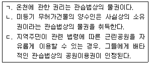
- ㄱ
- ㄴ
- ㄷ
- ㄴ, ㄷ
- ㄱ, ㄴ, ㄷ
(정답률: 39%)

2. 미혼인 18세의 甲은 친권자인 모(母) 乙과 생계를 같이 하고 있으며, 이웃의 丙을 친아버지처럼 의지하며 살고 있다. 이에 관한 설명으로 옳은 것은? (다툼이 있으면 판례에 따름)
- 丙의 甲에 대한 수권행위가 있더라도 甲이 丙의 대리인으로 행한 법률행위는 미성년임을 이유로 취소할 수 있다.
- 甲은 자신의 재산을 丙에게 준다는 유언을 할 수 없다.
- 乙이 甲에게 특정한 영업을 허락하였다면, 乙은 그 영업에 관한 법정대리권을 상실하므로 더 이상 그 영업에 대한 허락을 취소할 수 없다.
- 甲이 법정대리인의 동의를 요하는 법률행위를 乙의 동의없이 하였다면, 甲은 乙의 동의 없음을 이유로 그 행위를 취소할 수 없다.
- 甲이 법정대리인의 동의를 요하는 법률행위를 하면서 상대방에게 단순히 자신이 능력자라고 사언(詐言)한 경우라면, 乙의 동의 없음을 이유로 그 행위를 취소할 수 있다.
(정답률: 34%)
3. 태아의 권리능력에 관한 설명으로 옳은 것은? (다툼이 있으면 판례에 따름)
- 태아는 유류분권에 관하여 이미 출생한 것으로 본다.
- 태아인 동안에는 모(母)가 법정대리인으로서 법률행위를 할 수 있다.
- 태아가 타인의 불법행위로 인하여 사산된 경우, 태아의 손해배상청구권은 그 법정상속인에게 상속된다.
- 태아를 피보험자로 하는 상해보험계약은 그 효력이 인정되지 않는다.
- 태아에 대한 유증이 그 방식을 갖추지 못하여 무효이더라도 증여로서의 효력은 인정된다.
(정답률: 30%)
4. 제한능력자 등에 관한 설명으로 옳은 것은?
- 성년후견인은 원칙적으로 피성년후견인의 재산상 법률행위에 대한 동의권, 대리권 및 취소권이 있다.
- 피성년후견인의 법률행위는 일상생활에 필요하고 그 대가가 과도하지 않은 것이라도 성년후견인이 취소할 수 있다.
- 한정후견인은 피한정후견인의 모든 법률행위에 대한 동의권, 대리권 및 취소권이 있다.
- 특정후견심판으로 특정후견인이 선임되더라도 피특정후견인의 행위능력은 제한되지 않는다.
- 특정후견의 심판을 하는 경우에 특정후견의 기간이나 사무범위를 정할 필요는 없다.
(정답률: 32%)
5. 부재와 실종에 관한 설명으로 옳지 않은 것은? (다툼이 있으면 판례에 따름)
- 외국에 장기 체류하더라도 그 소재가 분명하고 소유재산을 타인을 통하여 직접 관리하고 있는 자는 민법상 부재자라고 할 수 없다.
- 부재자에게 1순위 상속인이 있는 경우에 2순위 상속인은 특별한 사정이 없는 한, 실종선고를 청구할 수 있는 이해관계인이 아니다.
- 실종선고를 받은 자가 생존해 있더라도 실종선고가 취소되지 않는 한 그 사망의 효과는 지속된다.
- 부재자가 실종선고를 받은 경우에 실종자는 그 선고일까지 생존한 것으로 본다.
- 부재자가 돌아올 가망이 전혀 없는 경우에도 생존해 있다는 사실이 증명되었다면 실종선고를 받을 수 없다.
(정답률: 29%)
6. 법인 아닌 사단에 관한 설명으로 옳지 않은 것은? (다툼이 있으면 판례에 따름)
- 특별한 사정이 없는 한, 구성원 개인은 총유재산의 보존을 위한 소를 단독으로 제기할 수 없다.
- 법인 아닌 사단의 채무에 대해서는 특별한 사정이 없는 한, 구성원 각자가 그 지분비율에 따라 개인재산으로 책임을 진다.
- 구성원들의 집단적 탈퇴로 분열되기 전 사단의 재산이 분열된 각 사단의 구성원들에게 각각 총유적으로 귀속되는 형태의 분열은 허용되지 않는다.
- 법인 아닌 사단이 그 소유토지의 매매를 중개한 중개업자에게 중개수수료를 지급하기로 한 약정은 총유물의 관리ㆍ처분행위에 해당하지 않는다.
- 사원총회의 결의에 의하여 총유물에 대한 매매계약이 체결된 후, 그 채무의 존재를 승인하여 소멸시효를 중단시키는 행위는 총유물의 관리ㆍ처분행위에 해당하지 않는다.
(정답률: 34%)
7. 민법상 재단법인에 관한 설명으로 옳지 않은 것은? (다툼이 있으면 판례에 따름)
- 1인의 설립자에 의한 재단법인 설립행위는 상대방 없는 단독행위이다.
- 재단법인의 설립을 위해서는 반드시 재산의 출연이 있어야 한다.
- 출연재산이 부동산인 경우 법인의 설립등기만으로도 그 재산은 제3자에 대한 관계에서 법인에게 귀속된다.
- 재단법인의 설립을 위하여 서면에 의한 증여를 하였더라도, 착오에 기한 의사표시를 이유로 증여의 의사표시를 취소할 수 있다.
- 법인 아닌 재단에게도 부동산에 관한 등기능력이 인정될 수 있다.
(정답률: 27%)
8. 민법상 비영리법인에 관한 설명으로 옳은 것은?
- 법인의 설립은 법원의 허가를 요한다.
- 법인은 주무관청의 설립허가를 받음으로써 성립한다.
- 법인의 해산 및 청산사무는 주무관청이 검사, 감독한다.
- 사단법인의 사원의 지위는 특별한 사정이 없는 한, 양도 또는 상속할 수 없다.
- 사단법인의 정관은 특별한 사정이 없는 한, 총사원 4분의 3 이상의 동의가 있는 때에 한하여 이를 변경할 수 있다.
(정답률: 22%)
9. 민법상 법인의 이사에 관한 설명으로 옳지 않은 것은? (다툼이 있으면 판례에 따름)
- 법원이 선임한 이사의 직무대행자는 특별한 사정이 없는 한, 법인의 통상사무만을 집행할 수 있다.
- 이사의 임면에 관한 사항은 정관의 필요적 기재사항이다.
- 특별한 사정이 없는 한, 이사는 법인의 사무에 관하여 각자 법인을 대표한다.
- 법인과 이사의 이익이 상반하는 사항에 관하여는 임시이사를 선임하여야 한다.
- 이사의 대표권 제한이 정관에 기재되었더라도 그에 대한 등기를 마치지 않으면 법인은 그 정관규정을 알고 있는 제3자에게 대항할 수 없다.
(정답률: 27%)
10. 물건에 관한 설명으로 옳지 않은 것은? (다툼이 있으면 판례에 따름)
- 부합한 동산의 주종을 구별할 수 있는 경우, 특별한 사정이 없는 한 각 동산의 소유자는 부합 당시의 가액 비율로 합성물을 공유한다.
- 반려동물의 권리능력을 인정하는 관습법은 존재하지 않는다.
- 제사주재자에게는 자기 유골의 매장장소를 지정한 피상속인의 의사에 구속되어야 할 법률적 의무가 없다.
- 건물의 개수는 공부상의 등록에 의하여 결정되는 것이 아니라 건물의 상태 등 객관적 사정과 소유자의 의사 등 주관적 사정을 참작하여 결정된다.
- 분할이 가능한 토지의 일부에도 유치권이 성립할 수 있다.
(정답률: 20%)
11. 주물과 종물, 원물과 과실에 관한 설명으로 옳지 않은 것은? (다툼이 있으면 판례에 따름)
- 주물과 다른 사람의 소유에 속하는 물건은 원칙적으로 종물이 될 수 없다.
- 유치권자는 금전을 유치물의 과실로 수취한 경우, 이를 피담보채권의 변제에 충당할 수 있다.
- 종물을 주물의 처분에 따르도록 한 법리는 권리 상호간에는 적용되지 않는다.
- 매수인이 매매대금을 모두 지급하였다면 특별한 사정이 없는 한, 그 이후의 과실수취권은 매수인에게 귀속된다.
- 주물 소유자의 사용에 공여되고 있더라도 주물 그 자체의 효용과 직접 관계가 없는 물건은 종물이 아니다.
(정답률: 27%)
12. 권리변동의 원인과 그 성질이 올바르게 연결된 것을 모두 고른 것은? (다툼이 있으면 판례에 따름)
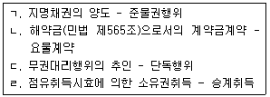
- ㄱ
- ㄱ, ㄴ
- ㄷ, ㄹ
- ㄱ, ㄴ, ㄷ
- ㄴ, ㄷ, ㄹ
(정답률: 22%)
13. 법률행위의 목적 등에 관한 설명으로 옳은 것은? (다툼이 있으면 판례에 따름)
- 법원은 당사자의 주장이 없으면 신의칙에 반하는 것인지를 직권으로 판단할 수 없다.
- 법령에서 정한 한도를 초과하는 부동산 중개수수료 약정은 그 초과한 부분뿐만 아니라 약정 전체가 무효이다.
- 반사회적 행위에 의하여 조성된 재산을 소극적으로 은닉하기 위한 임치계약은 반사회적 행위에 해당한다.
- 허위로 수사기관에 진술하고 대가를 받기로 하는 약정은 급부의 상당성 여부를 판단할 필요 없이 반사회적 행위로서 무효이다.
- 불공정한 법률행위에서 '궁박'이라 함은 경제적 원인에 기인한 것만을 의미하고, 정신적 또는 심리적 원인에 기인한 것은 포함하지 않는다.
(정답률: 26%)
14. 의사와 표시의 불일치에 관한 설명으로 옳은 것은? (다툼이 있으면 판례에 따름)
- 진의 아닌 의사표시에서 '진의'란 표의자가 진정으로 마음속에서 바라는 사항을 뜻한다.
- 진의 아닌 의사표시는 상대방이 악의인 경우에만 무효이므로 상대방의 과실 여부는 그 효력에 영향을 미치지 않는다.
- 통정허위표시에 기초하여 새로운 이해관계를 맺은 제3자는 특별한 사정이 없는 한 악의로 추정된다.
- 부동산의 가장양수인으로부터 소유권이전등기청구권 보전의 가등기를 받은 자는 통정허위표시의 제3자에 해당하지 않는다.
- 채무자의 법률행위가 채권자취소권의 대상이 되더라도 통정허위표시의 요건을 갖추면 무효이다.
(정답률: 20%)
15. 착오 또는 사기에 의한 의사표시에 관한 설명으로 옳지 않은 것은? (다툼이 있으면 판례에 따름)
- 당사자의 합의로 착오의 의사표시 취소에 관한 민법 제109조제1항의 적용을 배제할 수 있다.
- 상대방의 대리인은 상대방과 동일시되지 않으므로 그의 기망행위는 제3자의 기망행위에 해당한다.
- 출연재산이 재단법인의 기본재산인지 여부는 착오에 의한 출연행위의 취소에 영향을 주지 않는다.
- 제3자의 기망행위로 불법행위가 성립한 경우, 피해자가 제3자에게 손해배상을 청구하기 위해서는 상대방과의 계약을 취소할 필요가 없다.
- 착오로 인하여 표의자가 경제적인 불이익을 입지 않았다면 법률행위 내용의 중요 부분에 대한 착오라고 할 수 없다.
(정답률: 20%)
16. 묵시적 의사표시에 의해서도 그 효력이 발생하는 것을 모두 고른 것은? (다툼이 있으면 판례에 따름)
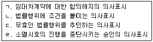
- ㄱ
- ㄱ, ㄹ
- ㄴ, ㄷ
- ㄴ, ㄷ, ㄹ
- ㄱ, ㄴ, ㄷ, ㄹ
(정답률: 23%)
17. 대리에 관한 설명으로 옳은 것은?
- 임의대리권은 대리인에 대한 한정후견 개시에 의하여 소멸한다.
- 무권대리행위의 추인은 다른 의사표시가 없는 한 추인한 때부터 효력이 생긴다.
- 법정대리인은 본인의 승낙이 있거나 부득이한 사유있는 때가 아니면 복대리인을 선임하지 못한다.
- 법률 또는 수권행위에 다른 정한 바가 없으면, 수인의 대리인은 공동으로 본인을 대리한다.
- 본인이 특정한 법률행위를 위임한 경우, 임의대리인이 본인의 지시에 좇아 그 행위를 하였다면, 본인은 자기의 과실로 알지 못한 사정에 관하여 그 대리인의 부지를 주장하지 못한다.
(정답률: 24%)
18. 甲으로부터 대리권을 수여받지 않은 乙이 甲을 대리하여 丙과 계약을 체결하였다. 이에 관한 설명으로 옳지 않은 것은? (표현대리는 성립하지 않았고, 다툼이 있으면 판례에 따름)
- 乙의 무권대리를 丙이 안 경우, 丙은 상당한 기간을 정하여 甲에게 추인 여부의 확답을 최고할 수 있다.
- 계약 당시 乙의 무권대리를 丙이 알았다면, 丙은 甲을 상대로 계약을 철회할 수 없다.
- 계약을 철회하고자 하는 丙은 乙에게 대리권이 없음을 알지 못하였다는 사실을 증명해야 한다.
- 계약 당시 乙의 무권대리를 丙이 알지 못하였다면, 甲의 추인이 있을 때까지 丙은 乙을 상대로 계약을 철회할 수 있다.
- 甲이 乙에게 무권대리행위에 대한 추인의 의사표시를 하였다면, 甲은 추인 사실을 알지 못한 丙에 대하여 그 추인으로 대항할 수 없다.
(정답률: 19%)
19. 표현대리에 관한 설명으로 옳은 것은? (다툼이 있으면 판례에 따름)
- 무권대리행위라도 표현대리가 성립하면 무권대리의 성질이 유권대리로 전환된다.
- 권한을 넘은 표현대리에서 정당한 이유의 존부는 대리행위가 행하여질 때를 기준으로 판단한다.
- 강행법규 위반으로 무효인 법률행위에도 표현대리에 관한 법리가 준용될 수 있다.
- 표현대리가 성립하는 경우, 상대방에게 과실이 있으면 과실상계의 법리를 유추적용하여 본인의 책임을 경감할 수 있다.
- 유권대리에 관한 주장 속에는 표현대리의 주장이 포함되어 있다.
(정답률: 20%)
20. 법률행위의 취소와 추인에 관한 설명으로 옳지 않은 것은? (다툼이 있으면 판례에 따름)
- 법률행위가 취소되면 그 법률행위는 처음부터 무효인 것으로 본다.
- 취소의 원인이 종료된 후 취소할 수 있는 법률행위를 추인하는 경우, 취소할 수 있는 법률행위임을 알고 추인해야 그 효력이 생긴다.
- 법률행위가 취소된 경우, 취소권자는 취소할 수 있는 법률행위의 추인에 의하여 취소된 법률행위를 유효하게 할 수 있다.
- 법률행위가 취소된 경우, 취소권자는 취소의 원인이 종료된 후 무효인 법률행위의 추인에 따라 그 법률행위를 유효하게 할 수 있다.
- 가분적인 법률행위의 일부분에만 취소사유가 있는 경우, 나머지 부분의 효력을 유지하려는 당사자의 가정적 의사가 있다면 그 일부만의 취소도 가능하다.
(정답률: 16%)
21. 조건에 관한 설명으로 옳은 것은? (다툼이 있으면 판례에 따름)
- 정지조건부 법률행위에 있어서 조건이 성취되었다는 사실은 권리를 취득하고자 하는 자가 증명하여야 한다.
- 조건을 붙이고자 하는 의사가 외부에 표시되지 않더라도 조건부 법률행위로 인정된다.
- 법률행위의 조건이 선량한 풍속에 반하는 경우, 원칙적으로 조건만 무효로 될 뿐 그 법률행위가 무효로 되는 것은 아니다.
- 불능조건이 정지조건이면 조건 없는 법률행위가 된다.
- 당사자 사이에는 의사표시로 조건 성취의 효력을 소급할 수 없다.
(정답률: 15%)
22. 법령 또는 약정 등으로 달리 정한 바가 없는 경우, 기간에 관한 설명으로 옳지 않은 것은? (다툼이 있으면 판례에 따름)
- 기간계산에 관한 민법 규정은 공법관계에 적용되지 않는다.
- 기간을 월 또는 연으로 정한 때에는 역(曆)에 의하여 계산한다.
- 기간의 말일이 토요일 또는 공휴일에 해당한 때에는 기간은 그 익일로 만료한다.
- 기간을 일 또는 주로 정한 때에는 그 기간이 오전 영시로부터 시작하지 않는 경우, 기간의 초일은 산입하지 아니한다.
- 연령계산에는 출생일을 산입한다.
(정답률: 19%)
23. 소멸시효에 관한 설명으로 옳지 않은 것은? (다툼이 있으면 판례에 따름)
- 정지조건부 권리는 조건이 성취된 때부터 소멸시효가 진행한다.
- 당사자가 본래의 소멸시효 기산일과 다른 기산일을 주장하는 경우, 법원은 본래의 소멸시효 기산일을 기준으로 소멸시효를 계산하여야 한다.
- 공동불법행위자 사이에 인정되는 구상권의 소멸시효는 구상권자가 공동면책행위를 한 때부터 진행한다.
- 특정물 매도인의 하자담보책임에 기한 매수인의 손해배상청구권은 특별한 사정이 없는 한, 그 목적물을 인도받은 때부터 소멸시효가 진행한다.
- 채권자가 선택권자인 선택채권은 선택권을 행사할 수 있는 때부터 소멸시효가 진행한다.
(정답률: 19%)
24. 소멸시효의 중단에 관한 설명으로 옳은 것은? (다툼이 있으면 판례에 따름)
- 과세처분의 취소 또는 무효 확인의 소는 소멸시효 중단사유인 재판상 청구에 해당하지 않는다.
- 권리의 일부에 대하여 소를 제기한 것이 명백한 경우, 원칙적으로 그 일부뿐만 아니라 나머지 부분에 대하여도 시효중단의 효력이 발생한다.
- 채권자가 파산법원에 대한 파산채권신고를 한 경우, 시효중단의 효력이 발생하지 않는다.
- 주채무자에 대한 시효의 중단은 보증인에 대하여 그 효력이 있다.
- 소멸시효가 중단된 때에는 그 시효의 진행이 일시 중지되었다가 중단사유가 종료한 때로부터 다시 이어서 진행한다.
(정답률: 18%)
25. 건물의 중간생략등기에 관한 설명으로 옳은 것을 모두 고른 것은? (다툼이 있으면 판례에 따름)
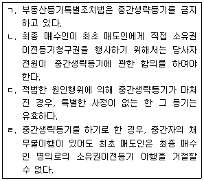
- ㄱ, ㄴ
- ㄴ, ㄹ
- ㄷ, ㄹ
- ㄱ, ㄴ, ㄷ
- ㄱ, ㄷ, ㄹ
(정답률: 20%)
26. 선의취득에 관한 설명으로 옳지 않은 것은? (다툼이 있으면 판례에 따름)
- 선의취득에 관한 민법 제249조는 동산질권에 준용한다.
- 연립주택의 입주권은 선의취득의 대상이 아니다.
- 동산을 경매로 취득하는 것은 선의취득을 위한 거래행위에 해당하지 않는다.
- 점유개정에 의한 점유취득만으로는 선의취득이 인정되지 않는다.
- 금전 아닌 유실물이 선의취득의 목적물인 경우, 유실자는 유실한 날로부터 2년내에 그 물건의 반환을 청구할 수 있다.
(정답률: 17%)
27. 점유에 관한 설명으로 옳지 않은 것은? (다툼이 있으면 판례에 따름)
- 과실(過失)없이 과실(果實)을 수취하지 못한 악의의 점유자는 회복자에 대하여 그 과실(果實)의 대가를 보상하여야 한다.
- 전후 양시에 점유한 사실이 있는 때에는 그 점유는 계속한 것으로 추정한다.
- 점유자가 점유하고 있는 동산에 대하여 행사하는 권리는 적법하게 보유한 것으로 추정함이 원칙이다.
- 선의의 점유자라도 본권에 관한 소에 패소한 때에는 그 소가 제기된 때로부터 악의의 점유자로 본다.
- 타주점유자에게도 유익비상환청구권이 인정될 수 있다.
(정답률: 18%)
28. 甲(1/3 지분)과 乙(2/3 지분)이 공유하는 X토지를 乙이 단독으로 丙에게 임대한 후 丁과 매매계약을 체결하였으나 丁명의로의 이전등기는 마쳐지지 않았다. 이에 관한 설명으로 옳지 않은 것은? (다툼이 있으면 판례에 따름)
- 乙의 丙에 대한 임대행위는 X토지의 관리방법으로서 적법하다.
- 丙은 甲에 대하여 X토지의 사용에 따른 부당이득반환의무를 부담하지 아니한다.
- 乙과 丁사이의 매매계약은 무효이다.
- 甲이 X토지에 관한 공유물분할 청구의 소를 제기한 경우, 법원은 甲이 청구한 분할방법에 구애받지 않고 공유자의 지분 비율에 따른 합리적인 분할을 하면 된다.
- 甲이 1년 이상 X토지의 관리비용 기타 의무의 이행을 지체한 경우, 乙은 상당한 가액으로 甲의 지분을 매수할 수 있다.
(정답률: 23%)
29. 지상권에 관한 설명으로 옳지 않은 것은? (다툼이 있으면 판례에 따름)
- 지상권설정등기를 하면서 지료를 등기하지 않은 경우, 지상권설정자는 그 지상권을 양수한 자에게 지료를 청구할 수 없다.
- 1필의 토지의 일부에는 지상권을 설정할 수 없다.
- 지상권설정등기 후 그 존속기간 중에는 지상물인 건물이 멸실되어도 지상권이 소멸하지 않는다.
- 하나의 채무를 담보하기 위하여 나대지(裸垈地)에 저당권과 함께 지상권을 설정한 경우, 피담보채권이 소멸하면 그 지상권도 소멸한다.
- 지상권자는 타인에게 그 권리를 양도하거나 그 권리의 존속기간 내에서 그 토지를 임대할 수 있다.
(정답률: 22%)
30. 甲이 乙소유의 대지에 전세권을 취득한 후 丙에 대한 채무의 담보로 그 전세권에 저당권을 설정하여 주었다. 이에 관한 설명으로 옳지 않은 것은? (다툼이 있으면 판례에 따름)
- 甲과 乙은 전세권을 설정하면서 존속기간을 6개월로 정할 수 있다.
- 설정행위로 금지하지 않은 경우, 甲은 전세권의 존속기간 중에 丙에게 전세권을 양도할 수 있다.
- 전세권의 존속기간 중에 甲은 전세권을 보유한 채, 전세금반환채권을 丙에게 확정적으로 양도할 수 없다.
- 전세권의 갱신 없이 甲의 전세권의 존속기간이 만료되면, 丙은 甲의 전세권 자체에 대하여 저당권을 실행할 수 없다.
- 존속기간의 만료로 甲의 전세권이 소멸하면 특별한 사정이 없는 한, 乙은 丙에게 전세금을 반환하여야 한다.
(정답률: 12%)
31. 유치권에 관한 설명으로 옳은 것은? (다툼이 있으면 판례에 따름)
- 피담보채권의 변제기가 도래하지 않은 동안에는 유치권이 성립하지 아니한다.
- 유치권자가 스스로 유치물인 주택에 거주하며 사용하는 것은 특별한 사정이 없는 한, 유치물의 보존에 필요한 사용에 해당하지 않는다.
- 유치권자가 채무자의 승낙 없이 채무자 소유인 유치물을 타인에게 대여하면 이로써 즉시 유치권은 소멸한다.
- 유치권행사는 피담보채권의 소멸시효 중단사유에 해당한다.
- 유치권에 의한 경매에서 유치권자는 일반채권자 보다 우선하여 배당을 받는다.
(정답률: 14%)
32. 근저당권에 관한 설명으로 옳은 것은? (다툼이 있으면 판례에 따름)
- 저당권과 달리 근저당권은 채권최고액을 정하여 등기하여야 한다.
- 피담보채무의 이자는 채권최고액에서 제외된다.
- 피담보채권의 확정 전에 발생한 원본채권에 관하여 그 확정 후에 발생한 이자채권은 피담보채권의 범위에 속하지 않는다.
- 채권자는 피담보채권이 확정되기 전에 그 채권의 일부를 양도하여 근저당권의 일부양도를 할 수 있다.
- 확정된 피담보채무액이 채권최고액을 초과하더라도 근저당권설정자인 채무자는 채권최고액을 변제하고 근저당권의 말소를 청구할 수 있다.
(정답률: 18%)
33. 채권자취소권에 관한 설명으로 옳은 것을 모두 고른 것은? (다툼이 있으면 판례에 따름)
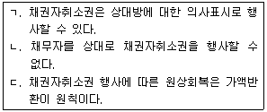
- ㄱ
- ㄴ
- ㄱ, ㄷ
- ㄴ, ㄷ
- ㄱ, ㄴ, ㄷ
(정답률: 15%)
34. 변제에 관한 설명으로 옳은 것은? (다툼이 있으면 판례에 따름)
- 특정물의 인도가 채권의 목적인 때에는 채무자는 채권발생 당시의 현상대로 그 물건을 인도하여야 한다.
- 채무의 변제로 타인의 물건을 인도한 채무자는 채권자에게 손해를 배상하고 물건의 반환을 청구할 수 있다.
- 채무자가 채권자의 승낙없이 본래의 채무이행에 갈음하여 동일한 가치의 물건으로 급여한 때에는 변제와 같은 효력이 있다.
- 채무의 성질 또는 당사자의 의사표시로 변제장소를 정하지 아니한 경우 특정물의 인도는 채권자의 현주소에서 하여야 한다.
- 법률상 이해관계 있는 제3자는 특별한 사정이 없는 한, 채무자의 의사에 반하여 변제할 수 있다.
(정답률: 6%)
35. 청약과 승낙에 관한 설명으로 옳지 않은 것은?
- 승낙기간을 정한 청약은 청약자가 그 기간 내에 승낙의 통지를 받지 못한 때에는 그 효력을 잃는다.
- 승낙의 연착 통지를 하여야 할 청약자가 연착의 통지를 하면 계약이 성립한다.
- 청약자는 연착된 승낙을 새로운 청약으로 볼 수 있다.
- 당사자간에 동일한 내용의 청약이 상호교차된 경우에는 양청약이 상대방에게 도달한 때에 계약이 성립한다.
- 관습에 의하여 승낙의 통지가 필요 없는 경우, 계약은 승낙의 의사표시로 인정되는 사실이 있는 때에 성립한다.
(정답률: 15%)
36. 계약의 해제에 관한 설명으로 옳지 않은 것은? (다툼이 있으면 판례에 따름)
- 당사자 일방이 이행을 제공하더라도 상대방이 그 채무를 이행하지 아니할 것이 객관적으로 명백한 경우, 그 일방은 이행의 제공 없이 계약을 해제할 수 있다.
- 매도인의 매매목적물에 관한 소유권이전의무가 매수인의 귀책사유만으로 이행불능이 된 경우, 매수인은 그 이행불능을 이유로 계약을 해제할 수 없다.
- 계약의 목적달성에 영향을 미치지 않는 부수적 채무의 불이행을 이유로 계약을 해제할 수 없다.
- 당사자 일방이 이행지체를 이유로 적법하게 계약을 해제한 경우, 상대방은 계약을 이행할 책임을 면한다.
- 계약이 해제된 경우 그 원상회복의 범위를 정함에 있어서는 과실상계가 적용된다.
(정답률: 12%)
37. 乙은 사과나무를 식재하여 과수원을 운영할 목적으로 甲소유의 X임야에 대해 甲과 존속기간을 10년으로 하는 임대차계약을 체결하였다. 이에 관한 설명으로 옳은 것은?
- 차임지급시기에 대한 관습 또는 다른 약정이 없으면 乙은 甲에게 매월말에 차임을 지급하여야 한다.
- 산사태로 X임야가 일부 유실되어 복구가 필요한 경우, 乙은 甲에게 그 복구를 청구할 수 없다.
- 甲이 X임야에 산사태 예방을 위해 필요한 옹벽설치공사를 하려는 경우, 乙은 과수원 운영을 이유로 이를 거부할 수 없다.
- 乙이 X임야에 대하여 유익비를 지출하여 그 가액이 증가된 경우, 甲에게 임대차종료 전에도 그 상환을 청구할 수 있다.
- 임대차가 존속기간의 만료로 종료되는 경우, 乙이 식재한 사과나무들이 존재하는 때에도 乙은 甲에게 갱신을 청구할 수 없다.
(정답률: 21%)
38. 위임계약에 관한 설명으로 옳지 않은 것은?
- 수임인은 보수의 약정이 없는 경우에도 선량한 관리자의 주의의무를 진다.
- 위임인은 수임인이 위임사무의 처리에 필요한 비용을 미리 청구한 경우 이를 지급하여야 한다.
- 무상위임의 수임인이 위임사무의 처리를 위하여 과실없이 손해를 받은 때에는 위임인에 대하여 그 배상을 청구할 수 있다.
- 수임인이 부득이한 사정에 의해 위임사무를 처리할 수 없게 된 경우, 제3자에게 그 사무를 처리하게 할 수 있다.
- 수임인이 위임인의 승낙을 얻어서 제3자에게 위임사무를 처리하게 한 경우, 위임인에 대하여 그 선임감독에 관한 책임이 없다.
(정답률: 22%)
39. 매도인의 담보책임에 관한 설명으로 옳지 않은 것은? (다툼이 있으면 판례에 따름)
- 특정물매매의 경우 목적물에 하자가 있더라도 악의의 매수인은 계약을 해제할 수 없다.
- 변제기에 도달한 채권의 매도인이 채무자의 자력을 담보한 때에는 매매계약 당시의 자력을 담보한 것으로 추정한다.
- 무효인 강제경매절차를 통하여 하자있는 권리를 경락받은 자는 경매의 채무자나 채권자에게 담보책임을 물을 수 없다.
- 매매계약 내용의 중요 부분에 착오가 있는 경우, 매수인은 매도인의 하자담보책임이 성립하는지와 상관없이 착오를 이유로 그 매매계약을 취소할 수 있다.
- 종류매매의 경우 인도된 목적물에 하자가 있는 때에는 선의의 매수인은 하자없는 물건을 청구하는 동시에 손배배상을 청구할 수 있다.
(정답률: 10%)
40. 불법행위에 관한 설명으로 옳지 않은 것은? (다툼이 있으면 판례에 따름)
- 사용자가 피용자의 선임 및 그 사무감독에 상당한 주의를 한 때에는 피용자가 그 사무집행에 관하여 제3자에게 가한 손해를 배상할 책임이 없다.
- 도급인은 도급 또는 지시에 관하여 중대한 과실이 있는 경우, 수급인이 그 일에 관하여 제3자에게 가한 손해를 배상할 책임이 있다.
- 공작물의 설치 또는 보존의 하자로 인하여 타인이 손해를 입은 경우, 1차적으로 공작물의 소유자가 배상책임을 진다.
- 교사자나 방조자도 공동행위자로서 공동불법행위책임을 질 수 있다.
- 대리감독자인 교사의 보호ㆍ감독책임은 소속 학교에서의 교육활동 및 이와 밀접 불가분의 관계에 있는 생활관계에 한하여 인정된다.
(정답률: 18%)
2과목: 회계원리
41. 재무제표의 구성요소 중 잔여지분에 해당하는 것은?
- 자산
- 부채
- 자본
- 수익
- 비용
(정답률: 24%)
42. 수정후 잔액시산표의 당좌예금 계정잔액이 대변에 존재할 경우 기말 재무상태표에 표시되는 계정과목은?
- 현금및현금성자산
- 단기차입금
- 장기대여금
- 선수금
- 예수금
(정답률: 19%)
43. 한국채택국제회계기준에서 정하는 전체 재무제표에 포함되지 않는 것은?
- 기말 세무조정계산서
- 기말 재무상태표
- 기간 손익과기타포괄손익계산서
- 기간 현금흐름표
- 주석(유의적인 회계정책 및 그 밖의 설명으로 구성)
(정답률: 21%)
44. 다음 설명에 해당하는 재무정보의 질적 특성은? (순서대로 (가), (나))
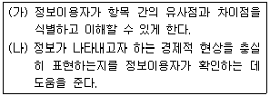
- 비교가능성, 검증가능성
- 중요성, 일관성
- 적시성, 중립성
- 중립성, 적시성
- 검증가능성, 비교가능성
(정답률: 23%)
45. (주)한국의 20×1년 자료가 다음과 같을 때, 기말자본은?
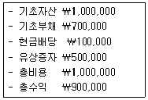
- ￦800,000
- ￦600,000
- ￦500,000
- ￦300,000
- ￦200,000
(정답률: 17%)
46. 회계상 거래에 해당하지 않는 것은?
- 재고자산을 ￦300에 판매하였으나 그 대금을 아직 받지 않았다.
- 종업원의 급여 ￦500 중 ￦200을 지급하였으나, 나머지는 아직 지급하지 않았다.
- 거래처와 원재료를 1kg당 ￦100에 장기간 공급받기로 계약하였다.
- 비업무용 토지 ￦1,200을 타회사의 기계장치 ￦900과 교환하였다.
- 거래처의 파산으로 매출채권 ￦1,000을 제거하였다.
(정답률: 21%)
47. (주)한국은 20×1년 4월 1일 향후 1년간(20×1년 4월 1일 ~ 20×2년 3월 31일) (주)대한에게 창고를 임대하고 그 대가로 ￦1,200(1개월 ￦100)을 현금으로 받아 수익으로 회계처리하였다. 이 거래와 관련하여 (주)한국이 20×1년 말에 수정분개를 하지 않았을 경우, 기말 재무제표에 미치는 영향으로 옳지 않은 것은?
- 부채가 ￦300 과대계상된다.
- 자산에 미치는 영향은 없다.
- 자본이 ￦300 과대계상된다.
- 비용에 미치는 영향은 없다.
- 수익이 ￦300 과대계상된다.
(정답률: 10%)
48. (주)한국은 20×1년 초 주당 액면금액 ￦5,000인 보통주 100주를 주당 ￦6,000에 현금으로 납입받아 회사를 설립하였다. 이에 대한 분개로 옳은 것은?
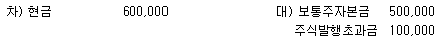
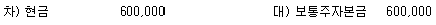
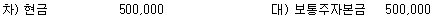
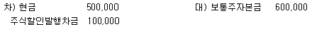
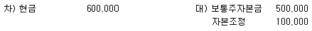
(정답률: 19%)
49. (주)한국의 기초재고자산은 ￦80,000이고, 당기순매입액은 ￦120,000이다. 기말재고 관련 자료가 다음과 같을 때, 매출원가는? (단, 정상감모손실은 매출원가로, 비정상감모손실은 기타비용으로 처리한다.)
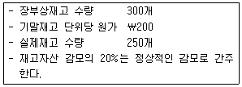
- ￦148,000
- ￦142,000
- ￦140,000
- ￦138,000
- ￦132,000
(정답률: 15%)
50. 다음은 (주)한국의 상품 관련 자료이다. 선입선출법과 가중평균법에 의한 기말재고자산금액은? (단, 실지재고조사법을 적용하며, 기초재고는 없다.) (순서대로 선입선출법, 가중평균법)
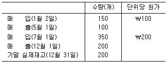
- ￦34,000, ￦34,000
- ￦34,000, ￦40,000
- ￦36,000, ￦34,000
- ￦40,000, ￦34,000
- ￦40,000, ￦40,000
(정답률: 16%)
51. (주)한국은 20×1년 초 기계장치(취득원가 ￦180,000, 내용연수 3년, 잔존가치 없음, 연수합계법 적용)를 취득하였다. (주)한국은 기계장치에 대하여 원가모형을 적용하고 있다. 20×1년 말 기계장치의 순공정가치는 ￦74,000이고 사용가치는 ￦70,000이다. (주)한국이 20×1년 말 기계장치와 관련하여 인식해야 할 손상차손은? (단, 20×1년 말 기계장치에 대해 자산손상을 시사하는 징후가 있다.)
- ￦4,000
- ￦16,000
- ￦20,000
- ￦46,000
- ￦50,000
(정답률: 15%)
52. 유형자산의 취득원가에 포함되지 않는 것은?
- 관세 및 환급 불가능한 취득 관련 세금
- 유형자산을 해체, 제거하거나 부지를 복구하는 데 소요될 것으로 최초에 추정되는 원가
- 새로운 상품과 서비스를 소개하는 데 소요되는 원가
- 설치원가 및 조립원가
- 유형자산의 매입 또는 건설과 직접적으로 관련되어 발생한 종업원 급여
(정답률: 20%)
53. 다음은 (주)한국의 기계장치 관련 내용이다. 유형자산 처분손익은? (단, 기계장치는 원가모형을 적용하고, 감가상각비는 월할계산한다.)
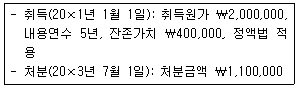
- ￦100,000 이익
- ￦100,000 손실
- ￦300,000 이익
- ￦400,000 이익
- ￦400,000 손실
(정답률: 9%)
54. (주)한국은 보유하고 있던 기계장치 A(장부금액 ￦40,000, 공정가치 ￦30,000)를 (주)대한의 기계장치 B(장부금액 ￦60,000, 공정가치 ￦50,000)와 교환하였다. 동 교환거래가 (가) 상업적 실질이 결여된 경우와 (나) 상업적 실질이 있는 경우에 (주)한국이 교환으로 취득한 기계장치 B의 취득원가는? (단, 기계장치 B의 공정가치가 기계장치 A의 공정가치보다 더 명백하다.) (순서대로 (가), (나))
- ￦30,000, ￦40,000
- ￦40,000, ￦30,000
- ￦40,000, ￦50,000
- ￦60,000, ￦30,000
- ￦60,000, ￦50,000
(정답률: 16%)
55. 무형자산에 관한 설명으로 옳지 않은 것은?
- 무형자산은 물리적 실체는 없지만 식별 가능한 화폐성자산이다.
- 내부적으로 창출한 영업권은 자산으로 인식하지 아니한다.
- 무형자산의 회계정책으로 원가모형이나 재평가모형을 선택할 수 있다.
- 최초에 비용으로 인식한 무형항목에 대한 지출은 그 이후에 무형자산의 취득원가로 인식할 수 없다.
- 내용연수가 유한한 무형자산은 상각하고, 내용연수가 비한정인 무형자산은 상각하지 아니한다.
(정답률: 14%)
56. (주)한국은 20×1년 초 시세차익 목적으로 건물(취득원가 ￦80,000, 내용연수 4년, 잔존가치 없음)을 취득하고 투자부동산으로 분류하였다. (주)한국은 건물에 대하여 공정가치모형을 적용하고 있으며, 20×1년 말과 20×2년 말 동 건물의 공정가치는 각각 ￦60,000과 ￦80,000으로 평가되었다. 동 건물에 대한 회계처리가 20×2년도 당기순이익에 미치는 영향은? (단, (주)한국은 통상적으로 건물을 정액법으로 감가상각한다.)
- ￦20,000 증가
- ￦20,000 감소
- 영향 없음
- ￦40,000 증가
- ￦40,000 감소
(정답률: 9%)
57. 금융자산에 해당하지 않는 것은?
- 미수이자
- 다른 기업의 지분상품
- 만기까지 인출이 제한된 정기적금
- 거래상대방에게서 국채를 수취할 계약상의 권리
- 선급금
(정답률: 15%)
58. (주)한국은 A주식을 20×1년 초 ￦1,000에 구입하고 취득수수료 ￦20을 별도로 지급하였으며, 기타포괄손익-공정가치 측정 금융자산으로 선택하여 분류하였다. A주식의 20×1년 말 공정가치는 ￦900, 20×2년 말 공정가치는 ￦1,200이고, 20×3년 2월 1일 A주식 모두를 공정가치 ￦1,100에 처분하였다. A주식에 관한 회계처리 결과로 옳지 않은 것은?
- A주식 취득원가는 ￦1,020이다.
- 20×1년 총포괄이익이 ￦120 감소한다.
- 20×2년 총포괄이익이 ￦300 증가한다.
- 20×2년 말 재무상태표상 금융자산평가이익(기타포괄손익누계액)은 ￦180이다.
- 20×3년 당기순이익이 ￦100 감소한다.
(정답률: 12%)
59. (주)한국은 20×1년 1월 1일 거래처로부터 액면금액 ￦120,000인 6개월 만기 약속어음(이자율 연 6%)을 수취하였다. (주)한국이 20×1년 5월 1일 동 어음을 은행에 양도(할인율 연 9%)할 경우 수령할 현금은? (단, 동 어음양도는 금융자산 제거조건을 충족하며, 이자는 월할계산한다.)
- ￦104,701
- ￦118,146
- ￦119,892
- ￦121,746
- ￦122,400
(정답률: 11%)
60. 다음 (주)한국의 20×1년 말 항목 중 재무상태표상 현금및현금성자산의 합계액은? (단, 외국환 통화에 적용될 환율은 $1=￦1,100이다.)
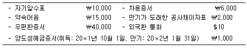
- ￦53,000
- ￦63,000
- ￦64,000
- ￦70,000
- ￦78,000
(정답률: 10%)
61. (주)한국은 20×1년 초 회사채(액면금액 ￦100,000, 표시이자율 5%, 이자는 매년 말 후급, 만기 20×3년 말)를 ￦87,566에 구입하고, 상각후원가 측정 금융자산으로 분류하였다. 20×1년 이자수익이 ￦8,757일 때, 20×2년과 20×3년에 인식할 이자수익의 합은? (단, 단수차이가 발생할 경우 가장 근사치를 선택한다.)
- ￦10,000
- ￦17,514
- ￦17,677
- ￦18,514
- ￦18,677
(정답률: 10%)
62. (주)한국은 20×1년 초 토지를 구입하고 다음과 같이 대금을 지급하기로 하였다.
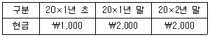
20×1년 말 재무상태표상 토지(원가모형 적용)와 미지급금(상각후원가로 측정, 유효이자율 10% 적용)의 장부금액은? (단, 정상연금의 10% 2기간 현재가치계수는 1.7355이며, 단수차이가 발생할 경우 가장 근사치를 선택한다.) (순서대로 토지, 미지급금)
- ￦3,000, ￦1,653
- ￦3,000, ￦1,818
- ￦4,471, ￦1,653
- ￦4,471, ￦1,818
- ￦4,818, ￦1,818
(정답률: 11%)
63. (주)한국은 20×1년 초 3년 만기 사채를 할인발행하여 매년 말 액면이자를 지급하고 상각후원가로 측정하였다. 20×2년 말 사채 장부금액이 ￦98,148이고, 20×2년 사채이자 관련 분개는 다음과 같다. 20×1년 말 사채의 장부금액은?
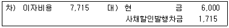
- ￦90,433
- ￦92,148
- ￦94,863
- ￦96,433
- ￦99,863
(정답률: 16%)
64. (주)한국의 당기 매출채권 손실충당금 기초잔액은 ￦50,000이고 기말잔액은 ￦80,000이다. 기중 매출채권 ￦70,000이 회수불능으로 확정되어 제거되었으나 그 중 ￦40,000이 현금으로 회수되었다. 당기 포괄손익계산서상 매출채권 손상차손은?
- ￦40,000
- ￦50,000
- ￦60,000
- ￦70,000
- ￦80,000
(정답률: 18%)
65. 다음 자료를 이용하여 계산한 매출총이익은?
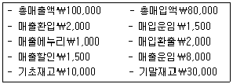
- ￦20,000
- ￦28,000
- ￦34,000
- ￦36,000
- ￦40,500
(정답률: 13%)
66. (주)한국은 본사 신축을 위해 기존 건물이 있는 토지를 ￦500,000에 구입하였으며, 기타 발생한 원가는 다음과 같다. (주)한국의 토지와 건물의 취득원가는? (순서대로 토지, 건물)
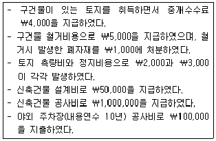
- ￦509,000, ￦1,000,000
- ￦509,000, ￦1,⑤0,000
- ￦513,000, ￦1,⑤0,000
- ￦513,000, ￦1,150,000
- ￦514,000, ￦1,150,000
(정답률: 17%)
67. (주)한국은 20×1년 초 기계장치(취득원가 ￦200,000, 내용연수 5년, 잔존가치 ￦20,000, 정액법 적용)를 취득하였다. 20×3년 초 (주)한국은 20×3년을 포함한 잔존내용연수를 4년으로 변경하고, 잔존가치는 ￦30,000으로 변경하였다. 이러한 내용연수 및 잔존가치의 변경은 정당한 회계변경으로 인정된다. (주)한국의 20×3년 동 기계장치에 대한 감가상각비는? (단, 원가모형을 적용하며, 감가상각비는 월할계산한다.)
- ￦23,000
- ￦24,500
- ￦28,333
- ￦30,000
- ￦32,000
(정답률: 13%)
68. 다음 자료를 이용하여 계산한 총매입액은? (단, 재고자산감모손실은 없다.)
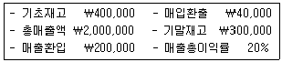
- ￦1,300,000
- ￦1,340,000
- ￦1,380,000
- ￦1,700,000
- ￦1,740,000
(정답률: 14%)
69. (주)한국은 20×1년 12월 31일 직원이 회사자금을 횡령한 사실을 확인하였다. 12월 31일 현재 회사 장부상 당좌예금 잔액은 ￦65,000이었으며, 거래은행으로부터 확인한 당좌예금 잔액은 ￦56,000이다. 회사측 잔액과 은행측 잔액이 차이가 나는 이유가 다음과 같을 때, 직원이 회사에서 횡령한 것으로 추정되는 금액은?
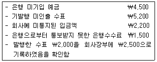
- ￦9,000
- ￦9,700
- ￦10,400
- ￦10,900
- ￦31,700
(정답률: 15%)
70. 자본에 관한 설명으로 옳은 것을 모두 고른 것은?
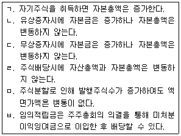
- ㄱ, ㄴ, ㄷ
- ㄱ, ㅁ, ㅂ
- ㄴ, ㄷ, ㄹ
- ㄴ, ㄹ, ㅁ
- ㄷ, ㄹ, ㅂ
(정답률: 10%)
71. (주)한국은 20×1년 초 액면금액 ￦100,000의 사채(표시이자율 연 8%, 이자는 매년 말 후급, 유효이자율 연 10%, 만기 20×3년 말)를 ￦95,026에 발행하고 상각후원가로 측정하였다. 동 사채와 관련하여 20×3년 인식할 이자비용은? (단, 이자는 월할계산하며, 단수차이가 발생할 경우 가장 근사치를 선택한다.)
- ￦9,503
- ￦9,553
- ￦9,653
- ￦9,818
- ￦9,918
(정답률: 11%)
72. (주)한국의 평균총자산액은 ￦40,000이고, 매출액순이익률은 5%이며, 총자산회전율(평균총자산 기준)이 3회일 경우, 당기순이익은?
- ￦2,000
- ￦4,000
- ￦5,000
- ￦6,000
- ￦8,000
(정답률: 14%)
73. (주)한국은 고저점법을 사용하여 전력비를 추정하고 있다. 20×1년 월별 전력비 및 기계시간에 근거한 원가추정식에 의하면, 전력비의 단위당 변동비는 기계시간당 ￦4이었다. 20×1년 최고 조업도수준은 1,100 기계시간이었고, 이 때 발생한 전력비는 ￦9,400이었다. 20×1년 최저 조업도수준에서 발생한 전력비가 ￦8,800일 경우의 조업도수준은?
- 800 기계시간
- 850 기계시간
- 900 기계시간
- 950 기계시간
- 1,000 기계시간
(정답률: 13%)
74. 정상원가계산하에서 개별원가계산제도를 적용하는 경우, 과대 또는 과소 배분된 제조간접원가 배부차이를 비례배분법에 의해 조정할 때, 차이조정이 반영되는 계정으로 옳은 것을 모두 고른 것은? (단, 모든 계정잔액은 “0”이 아니다.)
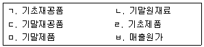
- ㄱ, ㄴ, ㄷ
- ㄴ, ㄷ, ㄹ
- ㄴ, ㅁ, ㅂ
- ㄷ, ㄹ, ㅁ
- ㄷ, ㅁ, ㅂ
(정답률: 12%)
75. (주)한국은 표준원가계산제도를 채택하고 있으며, 단일 제품을 생산ㆍ판매하고 있다. 2분기의 예정생산량은 3,000단위였으나, 실제는 2,800단위를 생산하였다. 직접재료원가 관련 자료는 다음과 같다.
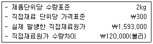
2분기의 직접재료 실제사용량은?
- 5,600kg
- 5,800kg
- 6,000kg
- 6,200kg
- 6,400kg
(정답률: 11%)
76. (주)한국의 손익분기점 수량이 900단위일 때, 변동비는 ￦180,000이며, 고정비가 ￦45,000이다. (주)한국이 930단위를 판매하여 달성할 수 있는 영업이익은?
- ￦500
- ￦900
- ￦1,100
- ￦1,300
- ￦1,500
(정답률: 10%)
77. (주)한국은 단일 제품을 생산ㆍ판매하고 있으며, 20×1년 공헌이익계산서는 다음과 같다.
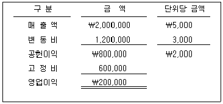
(주)한국은 현재 판매사원에게 지급하고 있는 ￦150,000의 고정급여를 20×2년부터 판매수량 단위당 ￦700을 지급하는 판매수당으로 대체하기로 하였다. 다른 모든 조건이 동일할 경우, (주)한국이 20×1년과 동일한 영업이익을 20×2년에도 달성하기 위해 판매해야 할 수량은?
- 450개
- 500개
- 550개
- 600개
- 650개
(정답률: 10%)
78. (주)한국은 ￦73,500에 구입한 원재료 A를 보유하고 있으나, 현재 제품생산에 사용할 수 없다. (주)한국은 원재료 A에 대해 다음과 같은 두 가지 대안을 고려하고 있다.
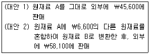
(주)한국이 (대안 2)를 선택하는 경우, (대안 1)에 비하여 증가 또는 감소하는 이익은?
- ￦5,900 증가
- ￦12,500 증가
- ￦15,400 감소
- ￦22,000 감소
- ￦27,900 감소
(정답률: 12%)
79. (주)한국은 제품 A와 제품 B를 생산ㆍ판매하고 있으며, 제품 A의 20×1년도 공헌이익계산서는 다음과 같다.
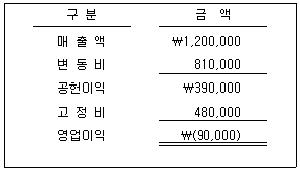
(주)한국의 경영자는 지난 몇 년 동안 계속해서 영업손실이 발생하고 있는 제품 A의 생산중단을 고려하고 있다. 제품 A의 생산을 중단하더라도 고정비 중 ￦210,000은 계속해서 발생된다. (주)한국이 제품 A의 생산을 중단할 경우, 영업이익에 미치는 영향은?
- ￦100,000 증가
- ￦100,000 감소
- ￦120,000 증가
- ￦120,000 감소
- ￦180,000 감소
(정답률: 4%)
80. (주)한국은 복수의 제품을 생산ㆍ판매하고 있으며, 활동기준원가계산을 적용하고 있다. (주)한국은 제품원가계산을 위해 다음과 같은 자료를 수집하였다.
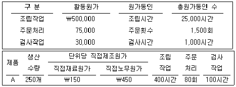
(주)한국이 당기에 A제품 250개를 단위당 ￦1,000에 판매한다면, A제품의 매출총이익은?
- ￦65,000
- ￦70,000
- ￦75,000
- ￦80,000
- ￦85,000
(정답률: 4%)
3과목: 공동주택시설개론
81. 건축물의 구조에 관한 설명으로 옳지 않은 것은?
- 커튼월은 공장생산된 부재를 현장에서 조립하여 구성하는 비내력 외벽이다.
- 조적구조는 벽돌, 석재, 블록, ALC 등과 같은 조적재를 결합재 없이 쌓아 올려 만든 구조이다.
- 강구조란 각종 형강과 강판을 볼트, 리벳, 고력볼트, 용접 등의 접합방법으로 조립한 구조이다.
- 기초란 건축물의 하중을 지반에 안전하게 전달시키는 구조 부분이다.
- 철근콘크리트구조는 철근과 콘크리트를 일체로 결합하여 콘크리트는 압축력, 철근은 인장력에 유효하게 작용하는 구조이다.
(정답률: 26%)
82. 건축물의 구조설계에 적용하는 하중에 관한 설명으로 옳은 것은?
- 기본지상적설하중은 재현기간 100년에 대한 수직 최심적설깊이를 기준으로 한다.
- 지붕활하중을 제외한 등분포활하중은 부재의 영향면적이 30m2 이상인 경우 저감할 수 있다.
- 고정하중은 점유ㆍ사용에 의하여 발생할 것으로 예상되는 최대하중으로, 용도별 최소값을 적용한다.
- 풍하중에서 설계속도압은 공기밀도에 반비례하고 설계풍속에 비례한다.
- 지진하중 산정 시 반응수정계수가 클수록 지진하중은 증가한다.
(정답률: 19%)
83. 벽 또는 일련의 기둥으로부터의 응력을 띠 모양으로 하여 지반 또는 지정에 전달하는 기초의 형식은?
- 병용기초
- 독립기초
- 연속기초
- 복합기초
- 온통기초
(정답률: 27%)
84. 건축물에 발생하는 부등침하의 원인으로 옳지 않은 것은?
- 서로 다른 기초 형식의 복합시공
- 풍화암 지반에 기초를 시공
- 연약지반의 분포 깊이가 다른 지반에 기초를 시공
- 지하수위 변동으로 인한 지하수위의 상승
- 증축으로 인한 하중의 불균형
(정답률: 28%)
85. 철근콘크리트구조에 관한 설명으로 옳지 않은 것은?
- 콘크리트와 철근은 온도에 의한 선팽창계수가 비슷하여 일체화로 거동한다.
- 알칼리성인 콘크리트를 사용하여 철근의 부식을 방지한다.
- 이형철근이 원형철근보다 콘크리트와의 부착강도가 크다.
- 철근량이 같을 경우, 굵은 철근을 사용하는 것이 가는 철근을 사용하는 것보다 콘크리트와의 부착에 유리하다.
- 건조수축 또는 온도변화에 의하여 콘크리트에 발생하는 균열을 방지하기 위해 사용되는 철근을 수축ㆍ온도철근이라 한다.
(정답률: 29%)
86. 미장공사의 품질 요구조건으로 옳지 않은 것은?
- 마감면이 평편도를 유지해야 한다.
- 필요한 부착강도를 유지해야 한다.
- 편리한 유지관리성이 보장되어야 한다.
- 주름이 생기지 않아야 한다.
- 균열의 폭과 간격을 일정하게 유지해야 한다.
(정답률: 27%)
87. 타일공사에 관한 설명으로 옳은 것을 모두 고른 것은?
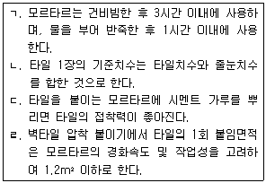
- ㄱ, ㄴ
- ㄱ, ㄷ
- ㄷ, ㄹ
- ㄱ, ㄴ, ㄹ
- ㄴ, ㄷ, ㄹ
(정답률: 25%)
88. 문 위틀과 문짝에 설치하여 문을 열면 자동적으로 조용히 닫히게 하는 장치로 피스톤 장치가 있어 개폐 속도를 조절할 수 있는 창호 철물은?
- 도어 체크
- 플로어 힌지
- 레버토리 힌지
- 도어 스톱
- 크리센트
(정답률: 27%)
89. 지붕 및 홈통공사에 관한 설명으로 옳은 것은?
- 지붕의 물매가 1/6보다 큰 지붕을 평지붕이라고 한다.
- 평잇기 금속 지붕의 물매는 1/4 이상이어야 한다.
- 지붕 하부 데크의 처짐은 경사가 1/50 이하의 경우에 별도로 지정하지 않는 한 1/120 이내이어야 한다.
- 처마홈통의 이음부는 겹침 부분이 최소 25mm 이상 겹치도록 제작하고 연결철물은 최대 60mm 이하의 간격으로 설치, 고정한다.
- 선홈통은 최장 길이 3,000mm 이하로 제작ㆍ설치한다.
(정답률: 23%)
90. 다음은 공사비 구성의 분류표이다. ( )에 들어갈 항목으로 옳은 것은?
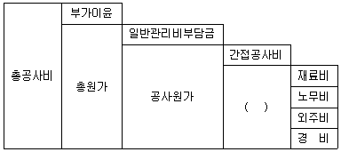
- 공통경비
- 직접경비
- 직접공사비
- 간접경비
- 현장관리비
(정답률: 27%)
91. 콘크리트 공사에 관한 설명으로 옳지 않은 것은?
- 보 및 기둥의 측면 거푸집은 콘크리트 압축강도가 5MPa 이상일 때 해체할 수 있다.
- 콘크리트의 배합에서 작업에 적합한 워커빌리티를 갖는 범위 내에서 단위수량은 될 수 있는 대로 적게 한다.
- 콘크리트 혼합부터 부어넣기까지의 시간한도는 외기온이 25℃ 미만에서 120분, 25℃ 이상에서는 90분으로 한다.
- VH(Vertical Horizontal) 분리타설은 수직부재를 먼저 타설하고 수평부재를 나중에 타설하는 공법이다.
- 거푸집의 콘크리트 측압은 슬럼프가 클수록, 온도가 높을수록, 부배합일수록 크다.
(정답률: 19%)
92. 철근콘크리트 구조물의 내구성 저하요인으로 옳지 않은 것은?
- 수화반응으로 생긴 수산화칼슘
- 기상작용으로 인한 동결융해
- 부식성 화학물질과의 반응으로 인한 화학적 침식
- 알칼리 골재반응
- 철근의 부식
(정답률: 24%)
93. 철골구조의 장점 및 단점에 관한 설명으로 옳지 않은 것은?
- 강재는 재질이 균등하며, 강도가 커서 철근콘크리트에 비해 건물의 중량이 가볍다.
- 장경간 구조물이나 고층 건축물을 축조할 수 있다.
- 시공정밀도가 요구되어 공사기간이 철근콘크리트에 비해 길다.
- 고열에 약해 내화설계에 의한 내화피복을 해야 한다.
- 압축력에 대해 좌굴하기 쉽다.
(정답률: 27%)
94. 철골구조 접합에 관한 설명으로 옳지 않은 것은?
- 일반볼트접합은 가설건축물 등에 제한적으로 사용되며, 높은 강성이 요구되는 주요 구조부분에는 사용하지 않는다.
- 언더 컷은 약한 전류로 인해 생기는 용접 결함의 하나이다.
- 용접봉의 피복제 역할을 하는 분말상의 재료를 플럭스라 한다.
- 고장력볼트 접합은 응력집중이 적으므로 반복응력에 강하다.
- 고장력볼트 마찰접합부의 마찰면은 녹막이칠을 하지 않는다.
(정답률: 21%)
95. 조적공사에 관한 설명으로 옳은 것은?
- 치장줄눈의 깊이는 1cm를 표준으로 한다.
- 공간쌓기의 목적은 방습, 방음, 단열, 방한, 방서이며 공간폭은 1.0B 이내로 한다.
- 벽돌의 하루 쌓기높이는 최대 1.8m까지 한다.
- 아치쌓기는 조적조에서 문꼴 너비가 1.5m 이하일 때는 평아치로 해도 좋다.
- 조적조의 2층 건물에서 2층 내력벽의 높이는 4m 이하이다.
(정답률: 24%)
96. 일반유리를 연화점 이하의 온도에서 가열하고 찬 공기를 약하게 불어주어 냉각하여 만든 유리로 내풍압 강도가 우수하여 건축물의 외벽, 개구부 등에 사용되는 유리는 무엇인가?
- 배강도유리
- 강화유리
- 망입유리
- 접합유리
- 로이유리
(정답률: 27%)
97. 아스팔트 방수공사의 시공순서로 옳은 것은?
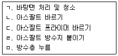
- ㄱ-ㄴ-ㄷ-ㄹ-ㅁ
- ㄱ-ㄴ-ㄹ-ㄷ-ㅁ
- ㄱ-ㄷ-ㄴ-ㄹ-ㅁ
- ㄱ-ㄷ-ㄹ-ㄴ-ㅁ
- ㄱ-ㄹ-ㄴ-ㄷ-ㅁ
(정답률: 24%)
98. 방습공사에 관한 설명으로 옳지 않은 것은?
- 방수모르타르의 바름 두께 및 횟수는 정한 바가 없을 때 두께 15mm 내외의 1회 바름으로 한다.
- 방습공사 시공법에는 박판시트계, 아스팔트계, 시멘트 모르타르계, 신축성 시트계 등이 있다.
- 아스팔트 펠트, 비닐지의 이음은 100mm 이상 겹치고 필요할 때는 접착제로 접착한다.
- 방습도포는 첫 번째 도포층을 12시간 동안 양생한 후에 반복해야 한다.
- 콘크리트, 블록, 벽돌 등의 벽체가 지면에 접하는 곳은 지상 100∼200mm 내외 위에 수평으로 방습층을 설치한다.
(정답률: 17%)
99. 도장공사에 관한 설명으로 옳은 것은?
- 유성페인트는 내화학성이 우수하여 콘크리트용 도료로 널리 사용된다.
- 철재면 바탕만들기는 일반적으로 가공장소에서 바탕재 조립 전에 한다.
- 기온이 10℃ 미만이거나 상대습도가 80%를 초과할 때는 도장작업을 피한다.
- 뿜칠 시공 시 약 40cm 정도의 거리를 두고 뿜칠넓이의 1/4 정도가 겹치도록 한다.
- 롤러도장은 붓도장보다 도장속도가 빠르며 일정한 도막두께를 유지할 수 있다.
(정답률: 21%)
100. 화단벽체를 조적으로 시공하고자 한다. 길이 12m, 높이 1m, 두께 1.5B(내부 콘크리트(시멘트) 벽돌 1.0B, 외부 붉은 벽돌 0.5B)로 쌓을 때 콘크리트(시멘트) 벽돌과 붉은 벽돌의 소요량은? (단, 벽돌의 크기는 표준형(190×90×57mm)으로 하고, 줄눈은 10mm로 하며, 소수점 이하는 무조건 올림으로 한다.)
- 콘크리트(시멘트) 벽돌: 945매, 붉은 벽돌: 1,842매
- 콘크리트(시멘트) 벽돌: 1,842매, 붉은 벽돌: 927매
- 콘크리트(시멘트) 벽돌: 1,842매, 붉은 벽돌: 945매
- 콘크리트(시멘트) 벽돌: 1,878매, 붉은 벽돌: 927매
- 콘크리트(시멘트) 벽돌: 1,878매, 붉은 벽돌: 945매
(정답률: 20%)
101. 건축설비에 관한 내용으로 옳은 것은?
- 배관 내를 흐르는 물과 배관 표면과의 마찰력은 물의 속도에 반비례한다.
- 물체의 열전도율은 그 물체 1kg을 1℃ 올리는 데 필요한 열량을 말한다.
- 공기가 가지고 있는 열량 중, 공기의 온도에 관한 것이 잠열, 습도에 관한 것이 현열이다.
- 동일한 양의 물이 배관 내를 흐를 때 배관의 단면적이 2배가 되면 물의 속도는 1/4배가 된다.
- 실외의 동일한 장소에서 기압을 측정하면 절대압력이 게이지압력보다 큰 값을 나타낸다.
(정답률: 16%)
102. 급수설비의 수질오염에 관한 설명으로 옳지 않은 것은?
- 저수조에 설치된 넘침관 말단에는 철망을 씌워 벌레 등의 침입을 막는다.
- 물탱크에 물이 오래 있으면 잔류염소가 증가하면서 오염 가능성이 커진다.
- 크로스커넥션이 이루어지면 오염 가능성이 있다.
- 세면기에는 토수구 공간을 확보하여 배수의 역류를 방지한다.
- 대변기에는 버큠브레이커(vacuum breaker)를 설치하여 배수의 역류를 방지한다.
(정답률: 23%)
103. 고가수조방식에서 양수펌프의 전양정이 50m이고, 시간당 30m3를 양수할 경우의 펌프 축동력은 약 몇 kW인가? (단, 펌프의 효율은 60%로 한다.)
- 5.2
- 6.8
- 8.6
- 10.5
- 12.3
(정답률: 18%)
104. 다음 중 고층건물에서 급수조닝을 하는 이유와 관련 있는 것은?
- 엔탈피
- 쇼트서킷
- 캐비테이션
- 수격작용
- 유인작용
(정답률: 28%)
1⑤. 급탕설비에 관한 내용으로 옳지 않은 것은?
- 간접가열식은 직접가열식보다 수처리를 더 자주 해야 한다.
- 유량이 균등하게 분배되도록 역환수방식을 적용한다.
- 동일한 배관재를 사용할 경우 급탕관은 급수관보다 부식이 발생하기 쉽다.
- 개별식은 중앙식에 비해 배관에서의 열손실이 작다.
- 일반적으로 개별식은 단관식, 중앙식은 복관식 배관을 사용한다.
(정답률: 20%)
106. 배수설비 트랩의 일반적인 용도로 옳지 않은 것은?
- 기구트랩 - 바닥 배수
- S트랩 - 소변기 배수
- U트랩 - 가옥 배수
- P트랩 - 세면기 배수
- 드럼트랩 - 주방싱크 배수
(정답률: 18%)
107. 배수 및 통기설비에 관한 내용으로 옳은 것은?
- 배수관 내에 유입된 배수가 상층부에서 하층부로 낙하하면서 증가하던 속도가 더 이상 증가하지 않을 때의 속도를 종국유속이라 한다.
- 도피통기관은 배수수직관의 상부를 그대로 연장하여 대기에 개방한 통기관이다.
- 루프통기관은 고층건물에서 배수수직관과 통기수직관을 연결하여 설치한 것이다.
- 신정통기관은 모든 위생기구마다 설치하는 통기관이다.
- 급수탱크의 배수방식은 간접식보다 직접식으로 해야 한다.
(정답률: 21%)
108. 위생기구설비에 관한 내용으로 옳지 않은 것은?
- 위생기구는 청소가 용이하도록 흡수성, 흡습성이 없어야 한다.
- 위생도기는 외부로부터 충격이 가해질 경우 파손 가능성이 있다.
- 유닛화는 현장 공정이 줄어들면서 공기단축이 가능하다.
- 블로아웃식 대변기는 사이펀볼텍스식 대변기에 비해 세정음이 작아 주택이나 호텔 등에 적합하다.
- 대변기에서 세정밸브방식은 연속사용이 가능하기 때문에 사무소, 학교 등에 적합하다.
(정답률: 27%)
109. 도시가스설비에 관한 내용으로 옳지 않은 것은?
- 가스의 공급압력은 고압, 중압, 저압으로 구분되어 있다.
- 건물에 공급하는 가스의 압력을 조정하고자 할 때는 정압기를 이용한다.
- 가스계량기와 화기(그 시설 안에서 사용하는 자체화기는 제외)는 2m 이상 거리를 유지해야 한다.
- 압력조정기의 안전점검은 1년에 1회 이상 실시한다.
- 가스계량기와 전기개폐기와의 거리는 30cm 이상으로 유지해야 한다.
(정답률: 28%)
110. 유도등 및 유도표지의 화재안전기준상 유도등의 전원에 관한 기준이다. ( )에 들어갈 내용이 순서대로 옳은 것은?
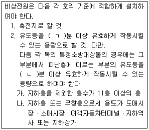
- ㄱ: 10, ㄴ: 20
- ㄱ: 15, ㄴ: 30
- ㄱ: 15, ㄴ: 60
- ㄱ: 20, ㄴ: 30
- ㄱ: 20, ㄴ: 60
(정답률: 20%)
111. 증기난방 설비의 구성요소가 아닌 것은?
- 감압밸브
- 응축수탱크
- 팽창탱크
- 응축수펌프
- 버킷트랩
(정답률: 24%)
112. 전기설비에 관한 설명으로 옳지 않은 것은?
- 변압기 1대의 용량산정은 건축물 내의 설치장소에 따라 건축의 장비 반입구, 반입통로, 바닥강도 등을 고려한다.
- 제1종 접지공사 시 접지선으로 공칭단면적 6mm2 이상의 연동선을 사용한다.
- 공동주택의 세대당 부하용량은 단위세대의 전용면적이 85m2 이하의 경우 3kW로 한다.
- 전압구분상 직류의 고압기준은 750V 초과 7,000V 이하이다.
- 전동기의 역률을 개선하기 위해 콘덴서를 설치한다.
(정답률: 16%)
113. 난방설비에 관한 내용으로 옳지 않은 것은?
- 보일러의 정격출력은 난방부하와 급탕부하의 합이다.
- 노통연관 보일러는 증기나 고온수 공급이 가능하다.
- 표준상태에서 증기방열기의 표준방열량은 약 756W/m2이다.
- 온수방열기의 표준방열량 산정시 실내온도는 18.5℃를 기준으로 한다.
- 지역난방용으로 수관식 보일러를 주로 사용한다.
(정답률: 18%)
114. 다음에서 설명하고 있는 배선공사는?
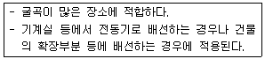
- 합성수지몰드 공사
- 플로어덕트 공사
- 가요전선관 공사
- 금속몰드 공사
- 버스덕트 공사
(정답률: 26%)
115. 난방방식에 관한 설명으로 옳지 않은 것은?
- 증기난방은 온수난방에 비해 열의 운반능력이 크다.
- 온수난방은 증기난방에 비해 방열량 조절이 용이하다.
- 온수난방은 증기난방에 비해 예열시간이 짧다.
- 복사난방은 바닥구조체를 방열체로 사용할 수 있다.
- 복사난방은 대류난방에 비해 실내온도 분포가 균등하다.
(정답률: 26%)
116. 다음에서 설명하고 있는 것은 무엇인가?
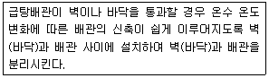
- 슬리브
- 공기빼기밸브
- 신축이음
- 서모스탯
- 열감지기
(정답률: 25%)
117. 엘리베이터에 관한 설명으로 옳지 않은 것은?
- 교류 엘리베이터는 저속도용으로 주로 사용된다.
- 파이널 리미트 스위치는 엘리베이터가 정격속도 이상일 경우 전동기에 공급되는 전기회로를 차단시키고 전자브레이크를 작동시키는 기기이다.
- 과부하 계전기는 전기적인 안전장치에 해당된다.
- 기어레스식 감속기는 직류 엘리베이터에 사용된다.
- 옥내에 설치하는 비상용 승강기의 승강장 바닥면적은 승강기 1대당 6m2 이상으로 해야 한다.
(정답률: 22%)
118. 지능형 홈네트워크 설비 설치 및 기술기준상 홈네트워크를 설치하는 경우 홈네트워크장비에 해당하지 않는 것은?
- 월패드
- 단지서버
- 예비전원장치
- 홈게이트웨이
- 원격검침시스템
(정답률: 15%)
119. 공동주택에서 난방설비, 급수설비 등의 제어 및 상태감시를 위해 사용되는 현장제어 장치는?
- SPD
- PID
- VAV
- DDC
- VVVF
(정답률: 22%)
120. 화재예방, 소방시설 설치ㆍ유지 및 안전관리에 관한 법령에서 정하고 있는 소방시설에 관한 내용으로 옳지 않은 것은?
- 비상콘센트설비, 연소방지설비는 소화활동설비이다.
- 연결송수관설비, 상수도소화용수설비는 소화용수설비이다.
- 옥내소화전설비, 옥외소화전설비는 소화설비이다.
- 시각경보기, 자동화재속보설비는 경보설비이다.
- 인명구조기구, 비상조명등은 피난구조설비이다.
(정답률: 20%)
- "ㄴ" : 관습법상의 권리는 법적으로 인정되지 않기 때문에, 법적 분쟁에서 증거로 사용하기 어렵다.
- "ㄷ" : 관습법상의 권리는 일정한 기간 동안 행해져 왔기 때문에, 이를 주장하는 측은 이를 증명할 책임이 있다. 따라서, 관습법상의 권리를 주장하는 경우에는 증거를 충분히 제시해야 한다.